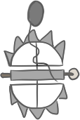

【A head】
A deer was hunted by the workshop's owner last week.
【An arrow】
【Rabbit】
It was cute. When it was still alive.
【Patus Tayluq】
In the past, Atayal hunters use homemade guns, called “patus mtayluq” in Atayal language, usually fashioned from devices like modified nail guns or muzzle-loading rifles that require hunters to add gunpowder to fire each shot. But such weapons are both dangerous and cruel because they can easily misfire or leave an animal facing a painful death. Usually the expereinced hunters would prepare 2-3 guns for hunting.
【Atayal bows】
Traditional bows and arrows, shotguns from the Japanese occupation period and the early recovery period, self-made wooden guns, modern infrared crossbows, etc., are rare except for traditional bows and arrows, and others can still be found, but most of them are illegal.
【Rusa】
This is used for catching wild boar, mountain Qiang and other large animal. The trap consists of a elastic bamboo pole, a small bamboo door, a fixed pole, several branches and a rope. After the animal steps on the branch, the tenon on the hemp thread will loosen from the bamboo door and the fixed pole, causing the bamboo pole to rebound and tighten the rope, hooking the animal's foot